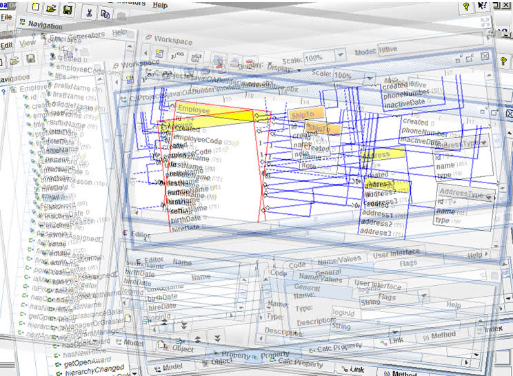

Creating Models
This section describes the steps and details for creating an OA Model.
The concept is that you are creating the foundation that describes the
information, organization and relationships for your project.
The main point is to stay creative, at first creating
a draft, and "throwing" all of your ideas into it. From there, as with any
draft, you will then begin to refine and perfect your model.
